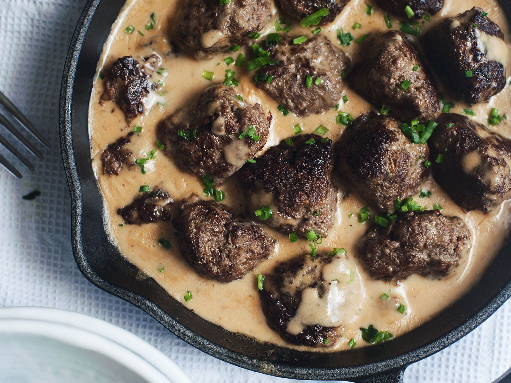

...İsveç Köftesi...

İsveç köftesi; küçük yuvarlak köfteler halinde pişen, et suyuyla hazırlanan sosu ile lezzetlenen, tek atımlık köftelerdir. İsveç köftesi ya da İsveçdeki özgün adıyla köttbullar, İsveç mutfağının en bilinen geleneksel yemeğidir.
Tarif: Kemal Kağan Kural
Kaç Kişilik:4kişilik
Hazırlama Süresi:15 dk
Pişirme Süresi:30dk
İsveç Köftesi Tarifi İçin Malzemeler..
- Yarım kilo az yağlı dana kıyma
- 1 adet soğan
- 1 adet sarımsak
- 1 tane yumurta
İsveç Köftesi Sosu Tarifi İçin Malzemeler..
- 1 yemek kaşığı tereyağı
- 1 yemek kaşığı un
- 1 yemek kaşığı mısır nişastası
- 300 ml sıcak et suyu (ya da et bulyonlu su)
- 2 yemek kaşığı krema
- Az tuz
- Karabiber
İsveç Köftesi Baget Ekmeği Tarifi İçin Malzemeler..
- Yarım su bardağı süt
- 1 tatlı kaşığı tuz
- Karabiber
- Kimyon
- Yenibahar
- Köftelerin daha çıtır olmasını istiyorsak 1 yemek kaşığı un
- Arzuya göre ince kıyılmış maydanoz
İsveç Köftesi ve Sosu Nasıl Yapılır
- Ekmekleri sütle ıslatıyoruz.
- Kuru soğan ve sarımsağı rendenin ince tarafıyla rendeliyoruz.
- Bir kaba kıyma, yumurta, rendelenmiş soğan ve sarımsağı, ekmek içi, tuz, baharatları katıyoruz.
- İyice yoğuralım. Ceviz büyüklüğünde yuvarlayalım.
- Yaklaşık yarım saat buzdolabında dursun, dinlensin.
- Tavaya yağı alalım, tavayı sallayarak köfteleri pişirelim.
- Kalan az yağı dökmeyelim. Sos için kullanacağız.
- Sos tavasına 1 yemek kaşığı tereyağı eritelim. Un ekleyelim.
- Un kavrulunca, sıcak et suyunu ekleyin ve karıştırmaya devam edin çırpıcıyla. Nişastayı dikkatli bir şekilde ekleyin ama dikkat topaklanmasın. Bu yüzden hızlı hızlı karıştırın.
- Sosunuz koyulaşınca, kremayı ekleyin.
- Kısıkta kalan az yağı ve baharatları ekleyin.
- 2-3 dk pişince, sosunuzda hazır.
- Sosunuzu köftelerinizin üzerinde veya yanında servis edebilirsiniz.